CSS 效果检阅：九个例程
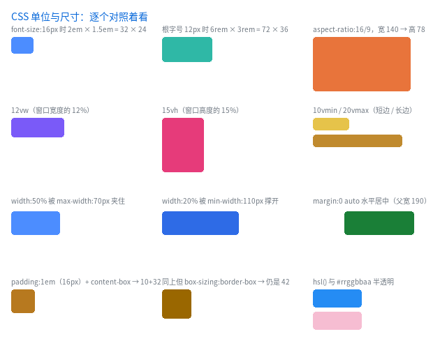
完整程序：example/16_css_units/ … example/23_calc/（每个例程一个文件夹）
前几章是按"补了什么"讲的（CSS3 补全、毛玻璃）。 这一章反过来：按"能看出效果的最小样本"讲 —— 每一个已支持的 CSS 效果都摆成 一格，旁边写着它该是什么值。跑起来一眼就能看出哪一格不对。
cmake --build build -j
./build/example/example_16_css_units # 单位与尺寸
./build/example/example_17_css_selectors # 选择器与伪元素
./build/example/example_18_css_paint # 绘制效果
三张图、三份 index.html + style.css，都可以直接改、直接重跑 —— 例程在运行期
读文件，不重新编译。
1. 16_css_units：单位与尺寸
| 格 | 验证什么 | 该看到什么 |
|---|---|---|
2em × 1.5em |
em 相对元素自己的 font-size: 16px |
32 × 24 |
6rem × 3rem |
rem 相对根字号 12px |
72 × 36 |
aspect-ratio: 16/9 |
只给宽 140，高由比例推出来 | 140 × 78 |
12vw |
视口宽的 12% | 随窗口宽度变 |
15vh |
视口高的 15% | 随窗口高度变 |
10vmin / 20vmax |
短边 / 长边（不跟横竖方向走） | 52 / 128 |
width: 50% + max-width: 70px |
上限夹住 | 70 |
width: 20% + min-width: 110px |
下限撑开 | 110 |
margin: 0 auto |
块级元素水平居中 | 卡片在父盒里居中 |
padding: 1em（两种 box-sizing） |
content-box 外框 42，border-box 仍 42 |
两个方块一样大 |
hsl() / #rrggbbaa |
颜色写法 | 蓝 / 半透明粉 |
这几个单位什么时候折成像素，是理解本库的关键：
| 单位 | 什么时候算 | 为什么 |
|---|---|---|
px / % |
布局期 | % 要包含块宽度 |
em |
构建期（编译样式那一刻就折成 px） | 字号那时已确定 |
rem |
构建期末尾（整棵树走完再折） | 根字号自身也可能是 em |
vw / vh / vmin / vmax |
布局期 | 只有布局时才知道视口多大 |
2. 17_css_selectors：选择器与伪元素
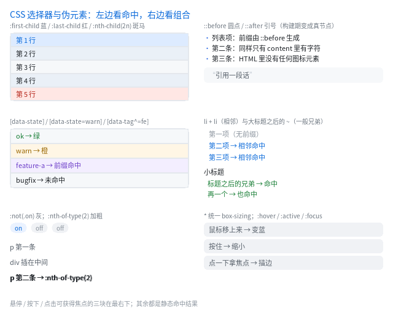
左列是单条件命中，右列是组合与生成。例程自己会数节点：
节点 60 个，其中 ::before 生成的圆点 5 个
| 格 | 验证什么 |
|---|---|
:first-child / :last-child / :nth-child(2n) |
五行里第一行蓝、最后一行红、偶数行斑马 |
[data-state] / [data-state=warn] / [data-tag^=fe] |
属性存在 / 精确 / 前缀三种 |
:not(.on) |
两个 off 变灰，on 保持原样 |
p:nth-of-type(2) |
只加粗第二个 <p>（中间夹着的 <div> 不干扰计数） |
::before / ::after + content |
三条竖线是圆点，引用前后有引号 |
.s + .s |
第二、三项变色（相邻兄弟） |
.gh ~ .after-h3 |
小标题之后的所有兄弟都命中 |
* |
统一 box-sizing |
:hover / :active / :focus |
鼠标移上去变蓝、按住变红、点一下拿焦点出描边 |
伪元素在这里是"真节点"：构建期 ::before 被展开成一个内容为 content 的
节点，运行期完全不知道有伪元素这回事。宿主自己有文字时（<div>正文</div>），
那段文字也会被挪进一个匿名 <span> —— 否则它和圆点都从内容盒原点开始排，
两样东西会叠在一起。这条路径和"文本 + 行内元素混排"是同一份实现
（见 QLUI API 手册 §3.4）。
3. 18_css_paint：绘制效果
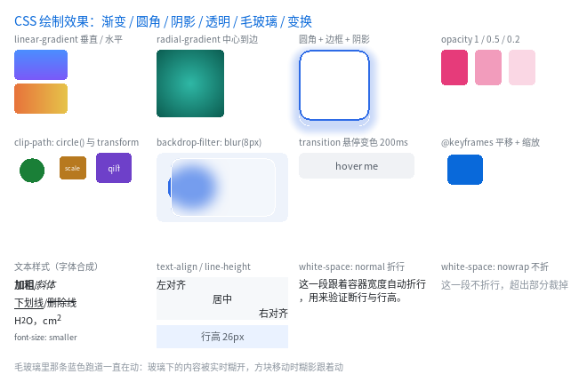
| 格 | 验证什么 |
|---|---|
linear-gradient 垂直 / 水平 |
行填充快路径与逐像素插值 |
radial-gradient |
圆心在中心，按到最远角归一化 |
border-radius + border + box-shadow |
圆角、描边、外阴影一起画 |
opacity: 1 / 0.5 / 0.2 |
逐图元降低不透明度 |
clip-path: circle(50%) |
圆形裁剪 |
transform: scale() / scaleX(-1) |
缩放与水平镜像 |
backdrop-filter: blur(8px) |
糊的是下面已经画好的像素，那个蓝色方块一直在动，糊影跟着动 |
transition |
鼠标移上去 200ms 变色 |
@keyframes |
平移 + 缩放循环 |
| 文本样式 | bold / italic / underline / line-through / sub / sup / smaller |
text-align / line-height |
左 / 中 / 右与行高 |
white-space |
normal 折行、nowrap 不折（溢出裁掉） |
毛玻璃那一格是这个例程的重点：跑道先画、玻璃后画，玻璃里看到的是跑道 被糊开的样子，而且是每帧重新糊的。
4. 19_css_text：文本细节
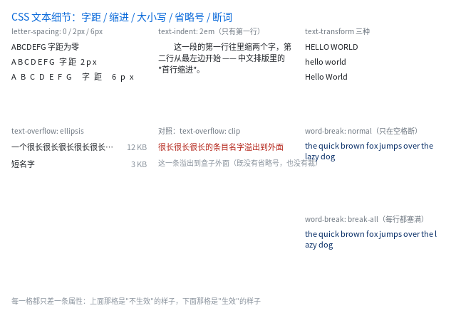
完整程序：example/19_css_text/
| 格 | 验证什么 | 该看到什么 |
|---|---|---|
letter-spacing: 0 / 2px / 6px |
字距加在每个字符之后 | 三行同一串字，一行比一行松 |
text-indent: 2em |
首行缩进（只第一行） | 第一行缩进两个字，第二行顶格 |
text-transform 三种 |
uppercase / lowercase / capitalize |
HELLO WORLD / hello world / Hello World |
text-overflow: ellipsis |
列表项经典写法：左名字自动缩、右数字固定宽 | 超长的名字变 …，右边的 12 KB 不动 |
对照：text-overflow: clip |
不省略会怎样 | 红字溢出到盒子外面 |
word-break: normal / break-all |
折行时允许断在哪里 | 同一句英文，normal 在空格断（右边参差），break-all 每行塞满（右边齐） |
两条容易踩的：
- 本库默认
white-space: nowrap（与浏览器不同），要折行必须显式写white-space: normal； - 写例程时别把类名起成
.cap——text-transform会被同名标题类一起套上（我第一版就把所有标题变成了大写）。
5. 20_live_reload：改 CSS 窗口自己变
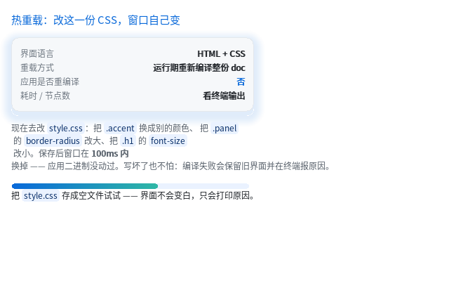
完整程序：example/20_live_reload/
./build/example/example_20_live_reload
# 另开编辑器改 example/20_live_reload/style.css，保存
终端会打印 重载：41 个节点，17 个样式，1 ms —— 应用二进制没动过。
原理只有一句：界面是可以在运行期编译的（ql_ui_load_text），所以热重载 = 重新读文件 +
重新建树。新文件写坏了会保留旧界面并打印原因（"明确失败优于半个正确"）。
这件事和"设计工具"是同一套东西，见 对比与取舍 §12。
6. 21_css_vars：一处定义，处处引用
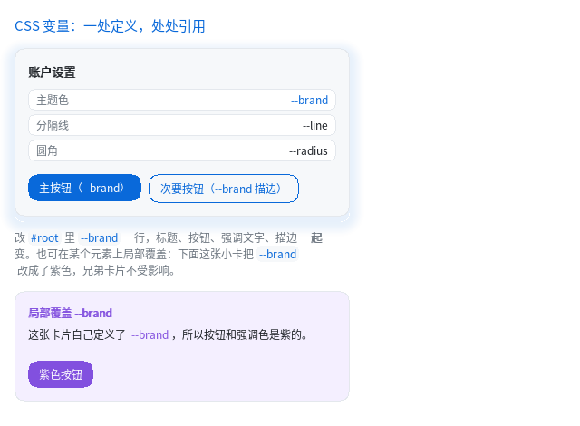
完整程序：example/21_css_vars/
#root { --brand: #0969DA; --line: #E4E8ED; --radius: 10px; }
.title { color: var(--brand); }
.btn { background-color: var(--brand); }
.card { border: 1px solid var(--line); border-radius: var(--radius); }
.promo { --brand: #8250DF; } /* 局部换肤：只影响这棵子树 */
例程里有两张卡片：第二张在自己身上改了 --brand，于是它的按钮和标题变紫，
第一张不受影响 —— 这就是"变量参与级联"的意思。
为什么在 qlgl 里特别便宜：变量在构建期就被换成了字面量
（级联之后、属性解析之前），所以 QLUIStyle 和 blob 格式一个字节都没变，
compile_style() 根本不知道有变量这回事。代价是不能运行期改变量 ——
换肤请换一份 CSS，或者用上一节的 20_live_reload 直接热重载。
7. 22_media：拖窗口就换布局
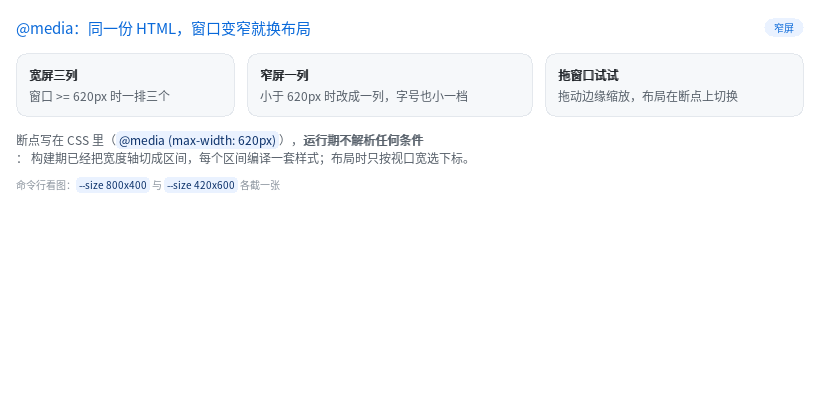
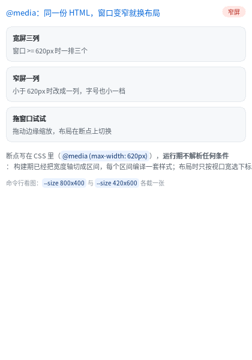
完整程序：example/22_media/
.row { display: flex; gap: 12px; }
@media (max-width: 620px) {
.row { flex-direction: column; gap: 8px; } /* 一排三个 → 一列 */
.h1 { font-size: 13px; } /* 字号小一档 */
.badge { background-color: #FFE7E4; color: #B42318; }
}
./build/example/example_22_media --size 820x420 --dump wide.ppm
./build/example/example_22_media --size 420x600 --dump narrow.ppm
运行期不解析任何条件：构建期已经把宽度轴切成区间（这个例程是 [0,620] 与
[621,∞)），每个区间编译一套样式；布局时只按视口宽选下标。拖窗口边缘就能看到
切换（不需要重新编译，也不需要重载文件）。
写这一节时踩到两个真 bug，都修了：
- 多趟编译必须清空
final_decls—— 它是"往 out 里合并"的，不清的话上一个断点 独有的声明（flex-direction: column）会残留到下一个断点，表现是"宽屏也是竖排"； - 列方向的最大内容高度要"求和"而不是"取最大" —— 一个带 padding、里面两行文字 的卡片，在 column 布局里高度被算成一行，后面的兄弟直接压上来。
8. 23_calc：布局期的算术
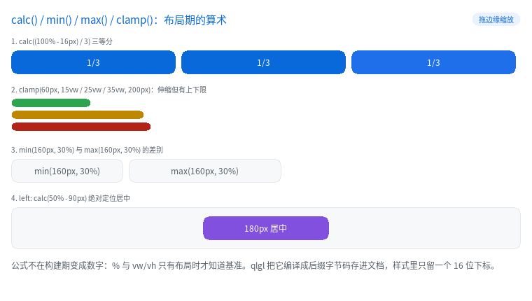
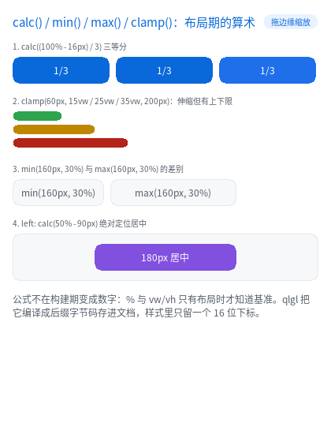
完整程序：example/23_calc/
.trio > .cell { width: calc((100% - 16px) / 3); margin-right: 8px; } /* 三等分 */
.b1 { width: clamp(60px, 15vw, 200px); } /* 伸缩但有上下限 */
.card { width: min(160px, 30%); }
.card.wide { width: max(160px, 30%); }
.mid { position: absolute; left: calc(50% - 90px); } /* 居中 */
./build/example/example_23_calc --size 760x430 --dump wide.ppm
./build/example/example_23_calc --size 420x560 --dump narrow.ppm
例程启动时会把文档里的字节码打出来，可以直接看到 calc((100% - 16px) / 3) 的形状：
calc 字节码 35 条（每条 4 字节）
[ 0] TERM value=33 unit=2 ← 33% （除以 3 已折进操作数）
[ 1] TERM value=5 unit=1 ← 5px
[ 2] SUB n=0
[ 3] END n=0
为什么不能算成数字：% 的基准是父内容盒、vw 的基准是视口，都只有布局时才知道。
所以公式编译成后缀字节码（每条 4 字节）存在文档里，样式字段只留一个 16 位下标；
布局时用一个 16 深的栈求值 —— 没有递归，也没有分配。
写这一节时又查出一个老 bug（与 calc 无关，是它把问题放大了）：
- flex 项的
width: 50%被解析两遍 ——measure一遍（基准 = 容器内容宽）， 真正layout_node时又拿"这一项自己的尺寸"当基准来一遍，于是 50% 变成四分之一。 带25% + 10px的calc()会让它更明显（px 项被减两次）。 修法：主轴上的%/calc()在measure阶段就折成 px 写回style_copy。
9. 24_b5：十二个"只加开关"的属性
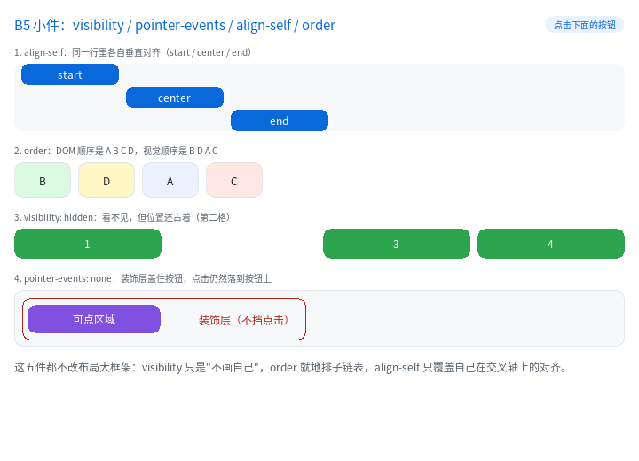
完整程序：example/24_b5/
.box.c { align-self: center; } /* 同一行里各自垂直对齐 */
.oa { order: 3; } /* DOM 顺序 A B C D，视觉顺序 B D A C */
.hide { visibility: hidden; } /* 看不见，但位置还占着 */
.deco { pointer-events: none; } /* 盖在按钮上的装饰层不挡点击 */
.row { flex-flow: row wrap; } /* flex-direction + flex-wrap 的简写 */
.lhead { position: sticky; top: 0; } /* 列表滚动时表头钉在顶部 */
.wrapbox{ align-content: space-between; } /* 多行在交叉轴上均分 */
.strip { overflow-x: hidden; overflow-y: visible; } /* 只裁横向 */
./build/example/example_24_b5 --size 720x520 --dump b5.ppm
点一下紫色按钮：装饰层是 pointer-events: none，点击穿过它落到按钮上
（终端打印命中的节点）。把那一行删掉再跑，点击就只会命中装饰层。
position: sticky 是"布局末尾的一次补偿平移"：滚动已经由 apply_scroll
把子树整体平移过，sticky 再把自己推回可视边缘，改的是 border_box ——
所以绘制、命中、脏区、paint_box 全都自动正确。约束在自己的包含块里，
所以列表滚到头它会跟着一起走（不是永远钉着）。
写这一节时又查出一个真缺陷（这一轮最有价值的发现）：
align-items: center / flex-end在"容器有确定高度、只有一行"这个最常见的 情况下完全没有效果 —— 单行的交叉尺寸取的是"各项最大值"，剩余空间恒为 0。 CSS 的默认align-content: stretch要求单行撑满容器的交叉尺寸，补上之后align-items才真的能用（golden 的align页因此变化，肉眼核对过： 两个方块现在在 120px 高的容器里居中）。多行的align-content仍然没做。
10. 25_b4：虚线边框与 outline
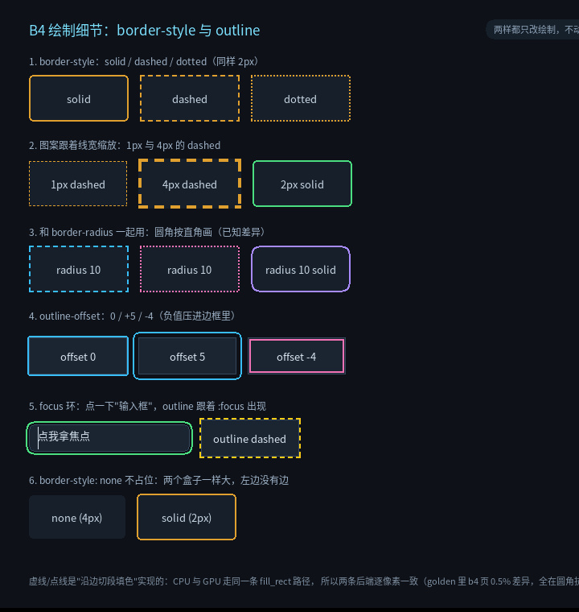
完整程序：example/25_b4/
.a { border: 2px dashed #E0A030; } /* 虚线：段 3w、缝 2w，跟着线宽缩放 */
.b { border: 2px dotted #E0A030; } /* 点线：点 1w、缝 1w */
.c { border-width: 4px; border-style: none; } /* 宽度归零，不占位 */
.d { outline: 2px solid #38BDF8; } /* 画在边框盒**外面**，不占布局 */
.d { outline-offset: 5px; } /* 往外推 5px */
.d { outline-offset: -4px; } /* 负值压进边框里面 */
.inp:focus { outline: 2px solid #4ADE80; outline-offset: 2px; } /* focus 环 */
./build/example/example_25_b4 --size 720x760 --dump b4.ppm
三件事值得记：
- 虚线是"沿边切段填矩形"，不碰 SDF：CPU 与 GPU 走同一条
fill_rect， 所以两条后端逐像素一致（golden 的b4页 CPU vs GPU 差异 0.5%， 全在圆角抗锯齿上）。代价是border-radius配 dashed/dotted 时按直角画。 border-style: none会把宽度按 0 算（CSS 语义）。只清样式不清宽度的实现 会让内容盒莫名缩水 2×width —— 例程第 6 节就是拿它跟solid比尺寸。outline天生适合 focus 环：它不占布局，所以出现/消失不会让页面抖一下。 注意 CSS 语义：outline-width单独写不画（outline-style初值是none）， 要画就用outline: 2px solid <色>简写。
11. 这几个例程查出了什么
写完这三个例程当场暴露了一个真 bug：
::before配宿主文本时，两边都从内容盒原点开始排 —— 圆点被正文盖掉，::after的引号同理。修法是把宿主文本挪进匿名span（与混排同一份实现）， 并让这个匿名节点不参与:first-child/+/~的匹配与计数。 回归测试：test/web/test_pseudo_text.c。- 顺带修掉
expand_pseudo里两处隐患：一条会漏内存的占位语句， 以及规则表realloc之后继续用旧Rule *的悬垂指针。
这就是"把每个效果都摆出来"的价值 —— 单看每个特性的单元测试都绿， 放到同一张图里才看得出它们之间的相互作用。